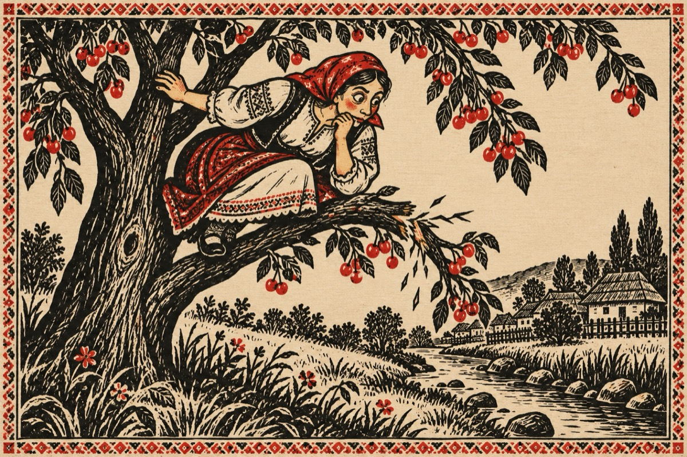

Mărie
Mărie-a lui Nicodim,
Are în gură pelin.
Nu-i amarul de la fiere,
Ci de-a lui Gorun muiere!
Să ține de Văsălie,
Cum e timbru pă hârcie.
La horă îi stă în cale,
Ș-o mărs sâ cu el pă vale!...
Ce mă crez că sunt bolândă,
Am stat în cireș la pândă.
Tulai Doamne ce-am văzut,
Până cireșu s-o rupt!
Acum îmi e șâ mai rău,
O mărs cu el la vălău.
Aplecată pân’ la brâu,
Bătea rufele-n pârâu!
Vai mo dor ni, foalele,
Până-n sus picioarele.
Le privește Văsălie
Știu eu ce gând poa să-i vie?...
Am datu’ șâ l-am stânlitu,
Văsălie ce-ai pățâtu’?
Ce ai cu-a lui Gorun,
Gândit-am că ești nebun?
Ce cotai cu ea la vălău
Ce tu ești bărbatu-său
Sau vrei să ce ocoșăști
Spune, tu mă mai iubești?
Șâ Mari șâ Văsălie
Îs în mare veselie
Tu Mărie, tu zăludă
Am vrut ca să-ți fac în ciudă
O țâră să ce căznesc
Să-ți arăt că ce iubăsc.
Câ șâ tu la horă-n sat
Arunci ochii p-alt bărbat.
Știu că rămâi cu zănitatul
Dar de te prinde păcatul?!...
Vasile Groza